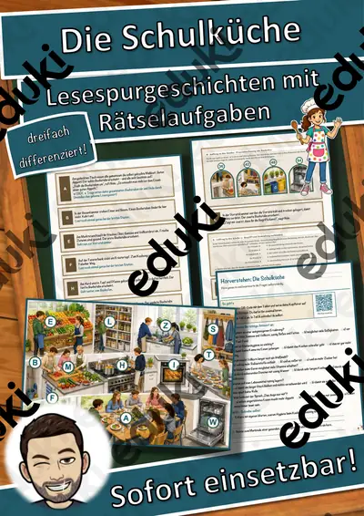
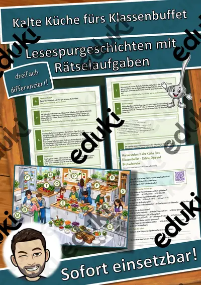
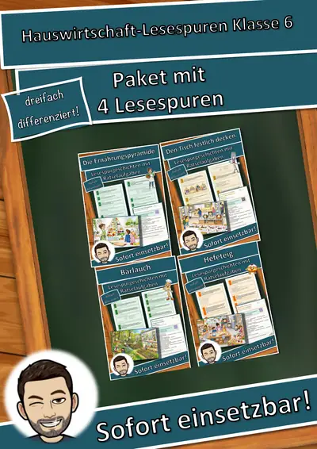
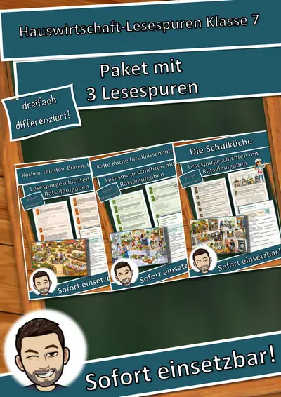

Lesespur: Bärlauch: Frühlingskraut mit giftigen Doppelgängern – Lesespurgeschichte mit Rätseln (Klasse 6)

Lesespur: Das Pausenfrühstück: fit in den Schultag – Lesespurgeschichte mit Rätseln (Klasse 1)

Lesespur: Den Tisch festlich decken: Gedeck, Tischsitten und Tischschmuck – Lesespurgeschichte mit Rätseln (Klasse 6)

Lesespur: Die Ernährungspyramide – Lesespurgeschichte mit Rätseln (Klasse 6)

Lesespur: Die Schulküche – Lesespurgeschichte mit Rätseln (Klasse 7)

Lesespur: Ein Festtagsmenü planen: Einkauf, Mengen und Zeitplan – Lesespurgeschichte mit Rätseln (Klasse 8)

Lesespur: Hefeteig: Ofen-Krapfen für die Faschingsfeier – Lesespurgeschichte mit Rätseln (Klasse 6)

Lesespur: Kalte Küche fürs Klassenbuffet: Salate, Dips und Brotaufstriche – Lesespurgeschichte mit Rätseln (Klasse 7)

Lesespur: Kochen, Dünsten, Braten, Backen: die Garmethoden – Lesespurgeschichte mit Rätseln (Klasse 7)

Lesespur: Sicher schneiden: Krallengriff, Brückengriff und eine Gemüsesuppe – Lesespurgeschichte mit Rätseln (Klasse 5)

Lesespur: Weihnachtsgewürze: Zimt, Nelke, Vanille & Co. – Lesespurgeschichte mit Rätseln (Klasse 6)

Lesespur: Weihnachtsplätzchen backen: Teig, Maße und Hygiene – Lesespurgeschichte mit Rätseln (Klasse 5)

Materialpaket Lesespurgeschichten Hauswirtschaft Klasse 6: 4 Lesespuren mit Rätselaufgaben, dreifach differenziert

Materialpaket Lesespurgeschichten Hauswirtschaft Klasse 7: 3 Lesespuren mit Rätselaufgaben, dreifach differenziert

Vorräte wie zu Omas Zeiten – Einkochen, Trocknen, Einlegen – Lesespurgeschichte mit Rätselaufgaben (Klasse 3)
Lesespurgeschichten im Fach Hauswirtschaft
Die Stationen entsprechen den Arbeitsschritten, die auch in der Küche oder Werkstatt in dieser Reihenfolge nötig sind. Wer sie vertauscht, merkt es sofort.
Jede Geschichte liegt in drei Niveaustufen vor, die sich in Textlänge, Satzbau und Aufgabenanspruch unterscheiden. Weg, Stationen und Lösungswort bleiben gleich, sodass alle Fassungen gleichzeitig in einer Klasse laufen können.
Themen auf dieser Seite
Beispiele aus dieser Sammlung: Lesespur: Weihnachtsplätzchen backen: Teig, Maße und Hygiene · Lesespur: Kalte Küche fürs Klassenbuffet: Salate, Dips und Brotaufstriche · Lesespur: Die Ernährungspyramide · Vorräte wie zu Omas Zeiten · Lesespur: Sicher schneiden: Krallengriff, Brückengriff und eine Gemüsesuppe · Materialpaket Lesespurgeschichten Hauswirtschaft Klasse 6: 4 Lesespuren mit Rätselaufgaben, dreifach differenziert · Lesespur: Hefeteig: Ofen-Krapfen für die Faschingsfeier · Lesespur: Kochen, Dünsten, Braten, Backen: die Garmethoden.